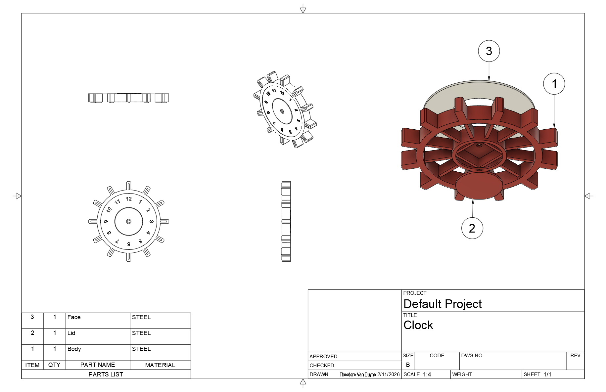
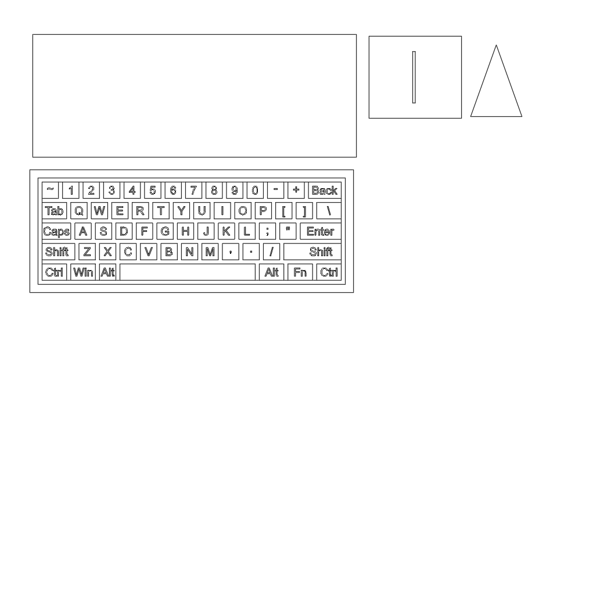
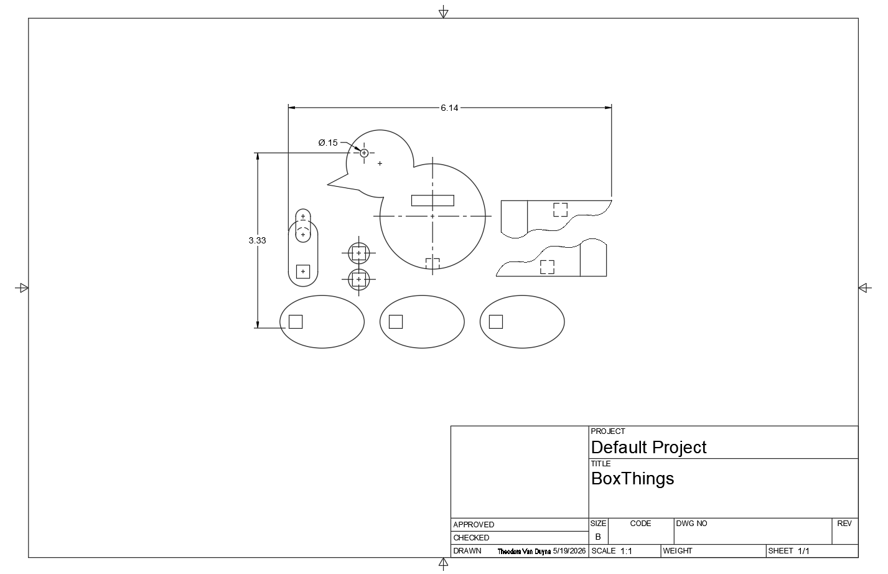
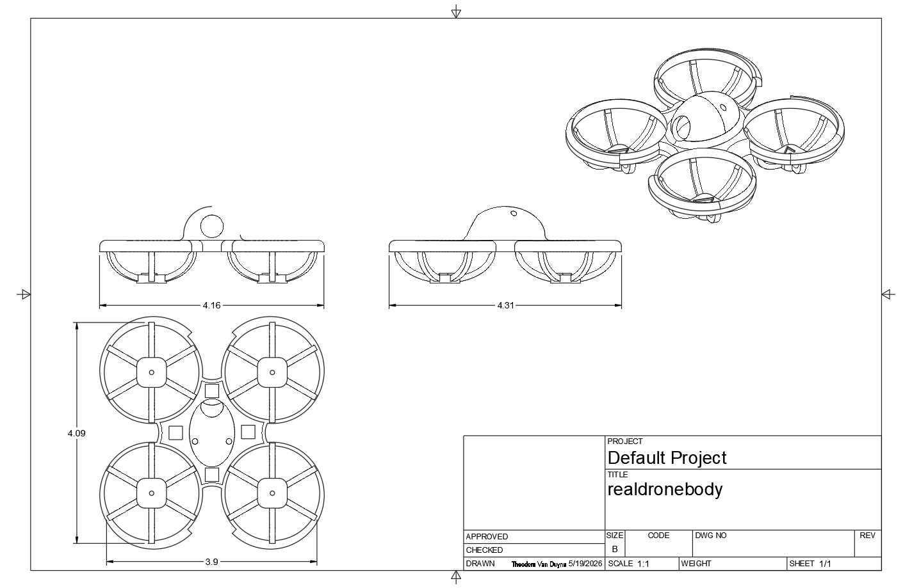
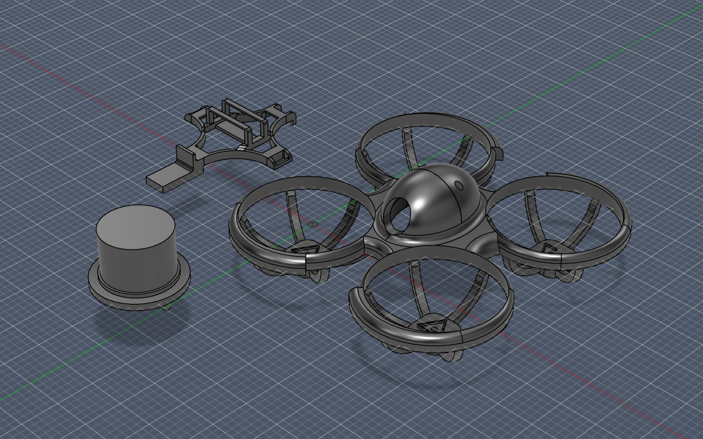
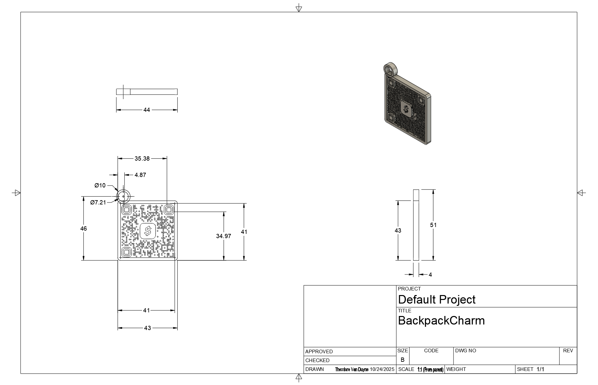
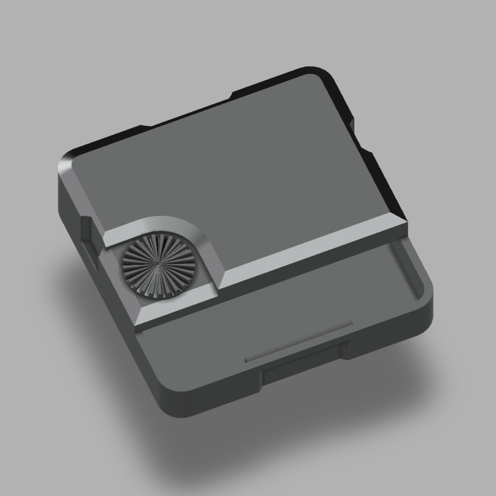

About
Hi, I’m Theodore. This portfolio shows my engineering, coding, and 3-D modeling work, starting with a carnival themed golf game project I built in class.
What to expect
Carnival Golf, Windmill Challenge
Problem statement
Design a carnival game that fits the booth size, keeps players safe, and gives a fair chance to win. The game had to include a target with a hole that rewards a top prize when a player gets the ball on par, and smaller prizes for scores above par. We used a cork launcher as our power source.
Design process
- Ask: We looked at the booth limits, what size the target board could be, and how consistent the cork launcher was when players used it.
- Imagine: Everyone sketched ideas. We compared a cork-based Angry Birds setup, a Pop-a-Shot rebound target, and a windmill-style hole like mini-golf.
- Plan: We chose the windmill. We sketched the layout for the booth and the target board, and we estimated where the launcher would be placed and how big the hole should be to give the right difficulty.
- Create: We built a prototype out of poster board and cardboard. We tested launches and watched how the ball moved through the windmill blades and landed in the hole or scoring zones.
- Improve: The prototype showed two main problems: the base was not stable enough, and the hole needed smoothing so the ball would not jam. We reinforced the base with extra bracing and adjusted the hole edges to improve reliability.
Rules and scoring
Players get up to three attempts per play. If a player gets the ball through the windmill hole on par, they win the largest prize. Any score above par gets a smaller prize. The attendant retrieves balls that fall through the hole.
Reflection
What worked: the windmill design was engaging and easy for players to understand, and small changes to the base increased reliability a lot. What to improve: collect more test data to fine tune hole size and position, and experiment with blade shape so the timing of openings is more forgiving.
Major Projects
Custom Clock Model

Balancing Sculpture

Automata Design Challenge

Project Goal
The objective was to create a mechanical toy for children ages 5–12 that used rotational motion from a hand crank to drive multiple moving parts. The project required the use of cams, an axle system, and additional mechanisms to translate motion into a short animated scene.
Design Process
- Brainstorming: I explored several ideas before choosing a bird design because it allowed me to experiment with synchronized but opposite movements.
- Planning Motion: I planned the movement so that when the crank rotated, the bird’s body would rise while the wings moved downward. This opposing motion made the automaton feel more dynamic and realistic.
- Cam Design: I used multiple cam shapes to create different movement patterns. One cam controlled the vertical motion of the bird’s body while another controlled the wing movement. By adjusting the cam profiles and timing, I was able to coordinate the motion between the different parts.
- CAD Modeling: I modeled the components digitally before construction to test spacing, clearances, and axle placement. Creating the CAD model helped me identify alignment issues before building the physical prototype.
- Testing and Improvements: During testing, friction between moving parts reduced smoothness and caused inconsistent motion. I improved the design by adjusting clearances, reinforcing weak areas, and reducing resistance around the axle and followers.
Mechanical Systems Used
Engineering Challenges
One of the hardest parts of the project was balancing smooth motion with structural stability. Small changes in cam height or follower position noticeably changed how the bird moved. I also learned how friction affects mechanical systems and how alignment and tolerances are important when designing moving assemblies.
What I Learned
This project improved my understanding of cams, motion transfer, mechanical timing, and prototype testing. It also gave me more experience using CAD software to plan moving systems before manufacturing physical parts.
Drone Work


Project Focus
The goal of this project was to understand the drone’s visual, functional, and structural qualities, then use that information to design an integrated accessory. I measured the original drone with a dial caliper so I could capture the important dimensions and build an accurate model.
Design Process
- Reverse engineering: I inspected the drone carefully and recorded measurements for the overall shape, major features, and key connection points.
- Concept development: I sketched several accessory ideas and chose the top hat because it matched the drone’s shape and gave the model a more finished look.
- CAD modeling: I built the drone model in CAD, then adjusted the top area so the accessory could interface with the assembly cleanly.
- Assembly planning: I checked fit, alignment, and clearances so the accessory would not interfere with the drone’s structure.
- Prototype and refinement: I used the model to evaluate how the accessory changed the look of the drone and whether the modified geometry still made sense structurally.
What the Accessory Added
The top hat was designed as a visual accessory that made the drone look more unique while still respecting the original form. It also forced me to think about how an added part connects to an existing product without damaging the base design.
What I Learned
This project improved my ability to measure accurately, model complex parts from real objects, and design around constraints. It also showed me how reverse engineering connects directly to engineering design, because the measurements and observations guided every decision in the CAD model.
3D Modeling Work
Backpack Charm

Clock Mechanism

Technical skills
 Python
Python
- Built automation tools and data processing scripts
- Used numpy/pandas for small analysis tasks
- Created games and tools with pygame
 HTML & CSS
HTML & CSS
- Responsive layouts and accessible markup
- Built this portfolio and GitHub Pages sites
- Experience with CSS grids and basic animations
 Lua
Lua
- Game scripting and gameplay logic
- Built plugins and event scripts
- Optimized loops and state machines
 C++
C++
- Simple engines
- Embedded firmware and microcontroller code
- Comfortable with pointers and basic STL usage
 Rust
Rust
- Small CLI tools and systems experiments
- Exploring ownership, lifetimes, and async
- Interest in low level and embedded systems
Level notes: I am currently learning more advanced topics in each language and plan to add sample code and project links here as I build more projects.